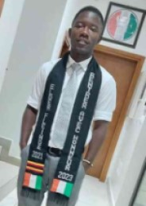

Hello everyone! Hope you are all doing great and even amazing! I am glad to be here, I live in Côte d'Ivoire (Ivory Coast in English). But we do not have much Ivories here and we are called the Ivorians. I am a very new returned missionary, and decided to not wait to start schooling, thanks to BYU-Pathway, I am able to be schooling online two weeks after I returned. I am the youngest in my family, I have 2 brothers and 3 siters, all married, I am an uncle of so many kids about ten,it's too early for me to be an uncle of so many and I love them so much, they are the light of my days.
I am a very smiling man. That's one of my strength, I am a good listener, I love the people around me. I am a member since my childhood,I was 5 years old when my parents got baptized and I followed.
I love watching movies, animés,listening to music, and I love computers too, I want to learn how to use them better,and see what I can do with those wonderful tools. I took this class to be able to do programming, to create apps or do things which are going to be helpful to people and make their lives easier.
I enjoy doing many more things like hiking and swimming(I am not a good swimmer, I just enjoy it); I am again very happy to be part of this. Hope we will work together.